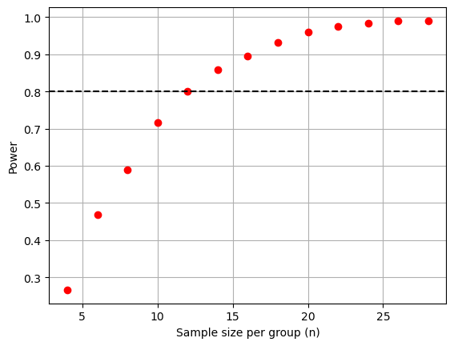
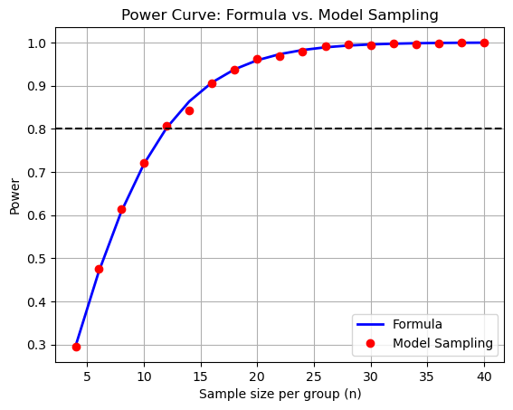

from scipy.io import loadmat
data = loadmat("pilot_two_group_data.mat")
lo_X = data['low_X']
hi_X = data['high_X']Deep Dive
Part 1: Introduction & Pilot Data
We instead consider data from two groups: - highest level of gene expression - lowest level of gene expression
We collect pilot data from N=5 subjects in the two groups.
import scipy.stats as stats
import numpy as np
t_stat, p_value = stats.ttest_ind(lo_X, hi_X, equal_var=True)
print('Low X -> Mean, STD: ', np.mean(lo_X), ',', np.std(lo_X))
print('High X -> Mean, STD:', np.mean(hi_X), ',', np.std(hi_X))
print('Difference in Mean hi X - lo X:', np.mean(hi_X)-np.mean(lo_X))
print('p:', p_value)Low X -> Mean, STD: -2.3950062043152864 , 9.47395131954884
High X -> Mean, STD: 11.720002555371144 , 13.642385484595346
Difference in Mean hi X - lo X: 14.11500875968643
p: [0.12762116]Pilot results support our expectations: - Lifespan for high gene expression > lifespan for low gene expression - The difference in mean lifespan between the two groups is about 14 years - However, this difference is not significant (p=0.128)
Q: How many subjects do we need for a sufficiently powered study?
A: Let’s consider our 3 different paths.
Path 3A: Resample the pilot data.
- Don’t do it!
- N=5 is too small to expect resampling represents the data generating distribution.
Path 3B: Build a model with the pilot data.
Model: Each group is drawn from a normal distribution.
Use the pilot data to estimate model parameters - standard deviation of each group (can be different), and - the difference in mean between groups.
Draw data from the model and perform the statistical test for different N.
Conclusion: We need about N=12 subjects in each group.
import matplotlib.pyplot as plt
# Estimate model parameters (SD, mean difference) from the pilot data.
lo_SD = np.std(lo_X);
hi_SD = np.std(hi_X);
d = np.mean(hi_X) - np.mean(lo_X);
alpha = 0.05;
# Evaluate power at different sample sizes
n_list = np.arange(4,30,2)
power = np.zeros(np.shape(n_list))
for k, N in enumerate(n_list):
n_k = N
nSim = 2000;
rejected = np.full((nSim, 1), False)
for i in np.arange(nSim):
g1 = np.random.randn(n_k,1) * lo_SD # sample from low
g2 = np.random.randn(n_k,1) * hi_SD + d # sample from high
_, p_value = stats.ttest_ind(g1, g2, equal_var=False) # Do the test
rejected[i] = p_value < alpha;
power[k] = np.mean(rejected);
print(N,power[k])4 0.2665
6 0.468
8 0.5895
10 0.717
12 0.8005
14 0.8595
16 0.896
18 0.932
20 0.9595
22 0.9745
24 0.984
26 0.9895
28 0.99# Plot the results of power versus N.
plt.figure()
plt.plot(n_list, power, 'ro')
plt.grid()
plt.axhline(0.80, color='k', linestyle='--')
plt.xlabel('Sample size per group (n)')
plt.ylabel('Power');
Path 3C: Build a model without pilot data.
Use our prior knowledge that: - Data from both groups are drawn from normal distribitions. - SD=10 years is the same for the two groups (i.e., equal variance). - Difference in mean between the two groups is 12 years.
Compare the power results from sampling the model to the textbook power formula from a two-sided two-sample t-test.
Conclusion: - The textbook formula and model sampling match. - We need about N=12 subjects in each group.
import numpy as np
import matplotlib.pyplot as plt
from scipy.stats import t, nct, ttest_ind
# Parameters
SD = 10
d = 12
alpha = 0.05
# Sample sizes per group to evaluate
n_list = np.arange(4, 41, 2)
power_parametric_curve = np.zeros(len(n_list))
power_montecarlo_curve = np.zeros(len(n_list))
nSimCurve = 2000
rng = np.random.default_rng()
for k, n_k in enumerate(n_list):
df_k = 2 * n_k - 2
# Power for two-sided two-sample t-test
lam = d / (SD * np.sqrt(2 / n_k)) # Noncentrality parameter
tcrit = t.ppf(1 - alpha / 2, df_k) # Two-sided critical t-value
power_parametric_curve[k] = (1 - nct.cdf(tcrit, df_k, lam) + nct.cdf(-tcrit, df_k, lam))
# Model estimate
rejected_k = np.zeros(nSimCurve, dtype=bool)
for i in range(nSimCurve):
g1 = rng.normal(loc=0, scale=SD, size=n_k)
g2 = rng.normal(loc=d, scale=SD, size=n_k)
_, p = ttest_ind(g1, g2, equal_var=True)
rejected_k[i] = p < alpha
power_montecarlo_curve[k] = np.mean(rejected_k)
# Plot
plt.figure()
plt.plot(n_list, power_parametric_curve, 'b-', linewidth=2, label='Formula')
plt.plot(n_list, power_montecarlo_curve, 'ro', markerfacecolor='r', label='Model Sampling')
plt.axhline(0.80, color='k', linestyle='--')
plt.xlabel('Sample size per group (n)')
plt.ylabel('Power')
plt.title('Power Curve: Formula vs. Model Sampling')
plt.legend(loc='lower right')
plt.grid(True)
plt.show()